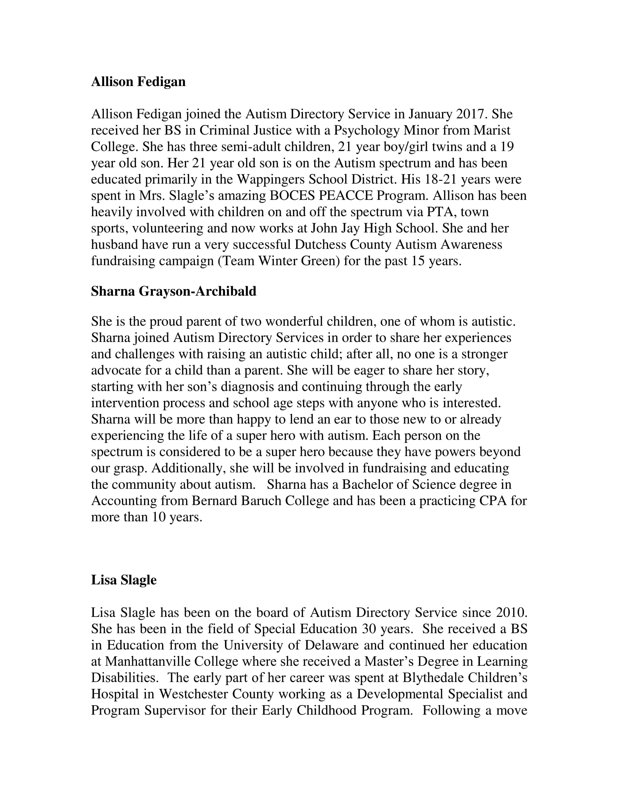
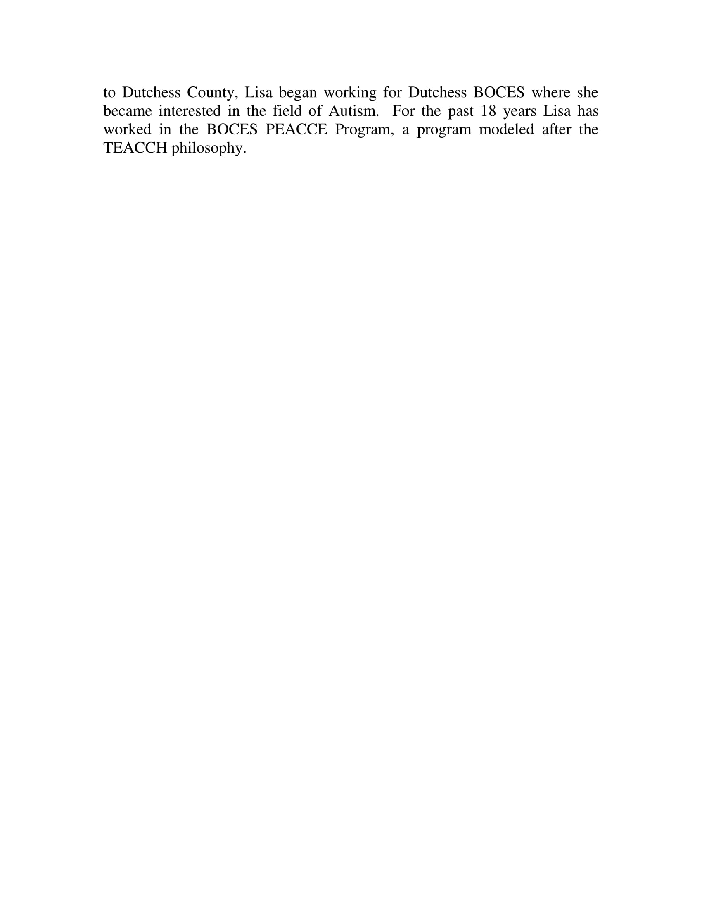

Contact Us
Please Join Us!
For information on working on one of our committees please contact:
Autism Directory Service, Inc.
PO Box 73
Wappingers Falls, NY 12590
Email Contacts
Donna Chamberlin: dmbchelps@yahoo.com
Sue Carr: suegrants@yahoo.com
Founding Members
Audrey Nisgor
Debra Adams
Stephanie Brenner
Officers
President – Donna Chamberlin
Vice President – Lisa Slagle
Treasurer – Sharna Grayson-Archibald, CPA
Secretary – Sue Carr

